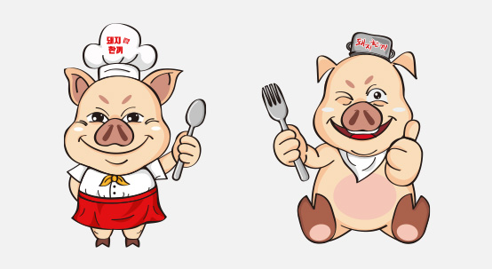

-
#UX기획
사용자 리서치를 통한 Insight를 도출
Problem을 해결하는 다양한 Soluction -
#프로그래밍 구현
시멘트웹을 지향하는 HTML/CSS 작성과
Javascript 로직 구현 -
#UI 디자인
사용자가 느낀 경험을 토대로
디자인을 짤 줄 아는 느낌있는 디자이너
로딩중
Jeong Yeon Joo
Creative Web Designer
#소통
세상이 필요로 하는 디자인을 고민하고 담아낼 준비가 되어있는 웹디자이너!
#B급
감성은 B급이지만 실력은 A급... 이 되려고 노력하는 웹디자이너!
스크롤바를 내리면 작품을 감상할 수 있습니다.
ABOUT ME
세상과 소통하려 노력하는 웹디자이너
온라인으로 쇼핑을 즐기고, 티켓을 구입하고, 만화도 보며, 동영상 플랫폼으로 영화나 드라마도 즐기는 저 또한 보통의 사용자입니다.
온라인으로 쇼핑을 할때 로그인 페이지를 못찾아 헤매이기도 하고, 티켓을 구매하다 튕겨서 다시 재구매해야할 상황도 생기고...
이런저런 당황스런 상황을 많이 겪기도 했습니다.
이런 경험은 누구나가 한번쯤은 겪었을법한 일 일것입니다.
이런 경험을 토대로 트랜드를 반영하면서도 누구나 보기 쉽고, 이용하기
편한 사이트를 디자인하고 싶습니다.
사용자들의 입장이 되어서 한 번 더 생각하여 그들이 원하고 필요로 하는 디자인을 하기 위해 끊임없이 세상의 흐름을 읽고, 담아낼
줄 아는 인재가 되겠습니다.
사용가능한 프로그램
- HTML5
- CSS3
- Javascript
- SASS
- Emmet
- jQuery
- 포토샵
- 일러스트
- AdobeXD
- VSCode
- 파워포인트
- MS-WORD
- HWP-한글
PORTFOLIO
1. 독도알리미
- 원페이지 디자인
시원한 느낌의 독도의 이미지를 메인으로 배치하였고,
간결한 레이아웃과 접근하기 쉬운 내용으로 사이트를
구성하였습니다.
작업프로그램 : Photoshop, Visual Studio Code
100% 개인 작업
2. 독도알리미 랜딩페이지
- 랜딩페이지
독도알리미 사이트를 알리기 위해 만들어진
랜딩페이지입니다.
작업프로그램 : Illustrator
100% 개인 작업
3. USB 상세페이지
USB에 대해 설명하는 상세페이지입니다.
USB를 다양한 각도로 촬영, 보정하여 USB가
돋보이도록 깔끔하게 디자인 하였습니다.
작업프로그램 : Photoshop
100% 개인 작업
4. 배터리 상세페이지
- 상세페이지
배터리에 대해 설명하는 상세페이지입니다.
배터리를 다양한 각도로 촬영, 보정하여 배터리의
대표적인 색, 레드색상으로 포인트를 주어 깔끔하게
디자인하였습니다.
작업프로그램 : Photoshop
100% 개인 작업
5. DortBlue 상세페이지
- 상세페이지
남성 올인원 화장품 더트블루의 상세페이지입니다.
더트블루의 포인트 색인 블루 색상을 포인트로 하여
디자인하였습니다.
작업프로그램 : Photoshop
100% 개인 작업

6. Campus 상세페이지
- 상세페이지
캠퍼스 노트의 상세페이지입니다.
캠퍼스 노트의 4가지 색상을 포인트로 하여
편집적인
느낌으로 디자인하였습니다.
작업프로그램 : Photoshop
100% 개인 작업
7. 안나수이 이벤트 배너
- 이벤트 배너r
안나수이 바디워시 이벤트입니다.
안나수이 제품에 디자인된 프레임과 장미문양을 활용하여,
아기자기하고, 빈티지스러운 디자인으로 배너를 제작하였습니다.
작업프로그램 : Photoshop
100% 개인 작업
8. 하이네켄 이벤트 배너
- 이벤트 배너
하이네켄 락페스티발 이벤트입니다.
하이네켄 병을 전면에 배치하여 제품이미지를 강조하고,
시원하고 상쾌한 느낌으로 디자인하였습니다.
작업프로그램 : Photoshop
100% 개인 작업
9. I'm real 이벤트 배너
- 이벤트 배너
음료수 I'm real의 이벤트 배너입니다.
토마토로 만든 주스인 만큼 신선한 토마토 이미지를 이용하였고,
I'm real의 캐릭터들을 적절하게 배치하여 이벤트 느낌을 더했습니다.
작업프로그램 : Photoshop
100% 개인 작업
10. 꼬마기 캐릭터 디자인
- 캐릭터 디자인
사막여우를 주제로 한 캐릭터입니다.
긴 귀가 특징인 사막여우의 특징을 살려 귀엽게 완성했습니다.
작업프로그램 : Illustrator
100% 개인 작업
11. 돼지한끼 캐릭터 디자인
- 캐릭터 디자인
돼지한끼라는 식당을 주제로 한 돼지 캐릭터입니다.
통통하고 탐스러워보이는 느낌으로 캐릭터를 완성하였습니다.
작업프로그램 : Illustrator
100% 개인 작업

12. 랑콤 명암 스킬
- 명암 스킬
포토샵을 사용하여 명암스킬로 제작한 랑콤 화장품입니다.
펜툴로 딴 다음 차곡차곡 명암을 쌓아가며 실제 화장품처럼
보이도록 정교한 작업을
거쳐 완성하였습니다.
작업프로그램 : Photoshop
100% 개인 작업
13. DSM 카드 뉴스
- 카드 뉴스
필요한 핵심만을 정리해서 만든 카드뉴스 디자인입니다.
작업프로그램 : Photoshop
100% 개인 작업
기획을 섬세한 디자인으로 구현
'생각한것을 기획하여 섬세한 디자인으로 그려내고싶다.'는 마음으로 매일 노력하고 있습니다.
포토샵, 일러스트레이터 , XD같은 디자인 툴로 디자인을 제작할 수 있습니다.
클라이언트가 원하는 요구사항을 적극적으로
반영하여 디자인 하는 능력은 저의 장점 중 하나입니다.
여러 디자인들을 참고하여 따라해보기도 하며, 고민을 거듭하여 디자인을 완성해 나가는것이 정말 즐겁습니다.
<캐릭터를 활용해서 질감을 표현한 디자인>
HTML,CSS 작성
JAVASCRIPT/JQUERY 구현
디자인된 페이지의 계층구조를 분석하여 HTML로 작성할 수 있으며,
CSS/SCSS로 스타일링을 할 수 있습니다.
ZenCoding을 활용한 HTML작성으로 작업시간을 단축시킬 수 있습니다.
웹접근성을 준수하여 Sprite-Image와 IR(Image Replacement)기법 사용,
id, class를 적절하게 사용하여 원하는 요소를 셀렉팅 할 수 있는 능력,
JavaScript/jQuery를 이용하여 적절한 이벤트 구현할 수 있습니다.
직접 구현한 슬라이드
UX DESIGN
작품리스트
이전 다음내가 생각하는 사용자경험 - User Experience
세종대왕에 대한 글을 읽다가 문득 한글창제야 말로 UX,UI의 가장 훌륭한 사례가 아닌가? 하는 생각이 번뜩 들었습니다.
문맹률 제로에 가까운 세계 유일의 국가가
한국이라고하니 세종대왕의 업적이 얼마나 눈부신지 가늠할수도 없습니다.
"우리나라의 말이 중국과 달라서 문자로 쓰면 서로 맞지 아니하니, 이런 이유로 어리석은 백성이 말하고자 하는 바가 있어도, 마침내 제 뜻을 펴지 못한다.
내 이를
불쌍하게 여겨, 새로 28글자를 만드니, 사람들로 하여금 쉽게 익혀 매일 쓰기 편하게 하고자 할 따름이니라."
한자를 몰라 자기들의 의사를 제대로 전달하지 못하여 불편함을 느끼는 백성들을 위해 훈민정음을 만든 세종대왕은 기획자이자, 디자이너이자, 개발자라고 생각합니다. 그리고 가장 칭하고
싶은 호칭은 위대한 통찰자라고 생각합니다. 통찰이 있어서 가능했던 한글창제였던 것이죠. 이처럼 제가 생각하는 UX는 사용자를 통찰이라는 과정을 통해 긍정적인 결과로 도출하는
것이라고 정의하고 싶습니다.
세종대왕의 훈민정음
디자인과 UX의 차이
- 1. 폐타이어
-
폐타이어를 활용하여
화분으로 업사이클링(Upcycling)한 사례
- 2. 빈 와인병
-
다마시고 남은 빈 와인병을
무드 조명으로 활용한 사례

5Whys - 비흡연 구역에서 담배꽁초를 바닥에 버리는 이유
원인-1
길거리에 재떨이가 없다.
원인-2
담배꽁초를 버릴만한 장소가 마땅치않다.
원인-3
캠페인등으로 인한 금연구역이 늘어나고 있다.
원인-4
인건비를 들이지 않는 이상 관리 할 사람이 없다.
원인-5
'아무나 다 버리니까 나도 버려도 된다'는 의식을 가지고 있다.
솔루션
요즘 공공시설은 대부분 금연구역으로 지정이 되기 때문에 정부 또는 지자체에서 길
거리에 흡연자와 비흡연자 모두를 위한 길거리 흡연부스를 만들어 준다면
하수구 덮개, 길거리에 쌓여가는 담배꽁초를 줄이는 데에 도움이 될것이다.
UI DESIGN
{kind=link}
{kind=link}
{kind=link}
{kind=link}
{kind=link}
{kind=link}
{kind=link}
{kind=link}
사막여우를 캐릭터화한 귀여운 로고
세상에 이로움을 전할수 있는 디자인으로 나아가고자 합니다.
적지않은 나이 탓에 웹디자인을 다시 시작하기가 두려웠습니다. 젊은 친구들의 감각을 내가 과연 따라갈 수 있을까? 하는 의문도 생겼습니다.
어찌됐든, 저는 다시 하기로 선택을 했고, 두려움과 설레임을 동시에 안고 학원을 다니게 되었습니다.
학원에서의 배움과 과제, 포트폴리오를 하며, 어려움에 머리를 싸매며 포기하고 싶었던 적도 있었고,
잘해낸 것 같아 뿌듯했던 작업도 있었습니다.
이런 과정들을 통해 좀 더 성장해있는 저를 느낄 수 있었고, 여기서 얻은 자신감으로 세상에 이로움을 전하는
웹디자이너로 나아가고자 합니다.